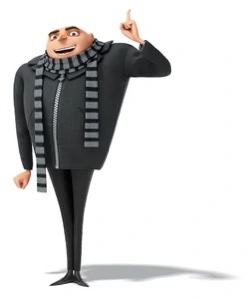

Felonius Gru (or simply Gru) is the son of Marlena Gru and the late Robert Gru, and is the main protagonist of the Despicable Me franchise. He is a former supervillain and is the husband of AVL agent Lucy Wilde. He has three adopted daughters Margo, Edith, and Agnes. Gru is also the leader of the Minions, is friends with Dr. Nefario and is also the twin brother of Dru Gru.
| Gender | Male |
| Age | Late 40's - Early 50's |
| Eye color | Blue |
| Hair color | Bald (formerly black) |
| Occupation | Anti-Villain League agent |
| Father | Robert Gru |
| Mother | Marlena Gru |
| Sibling | Dru Gru |
| Children | Margo Gru, Edith Gru, Agnes Gru |